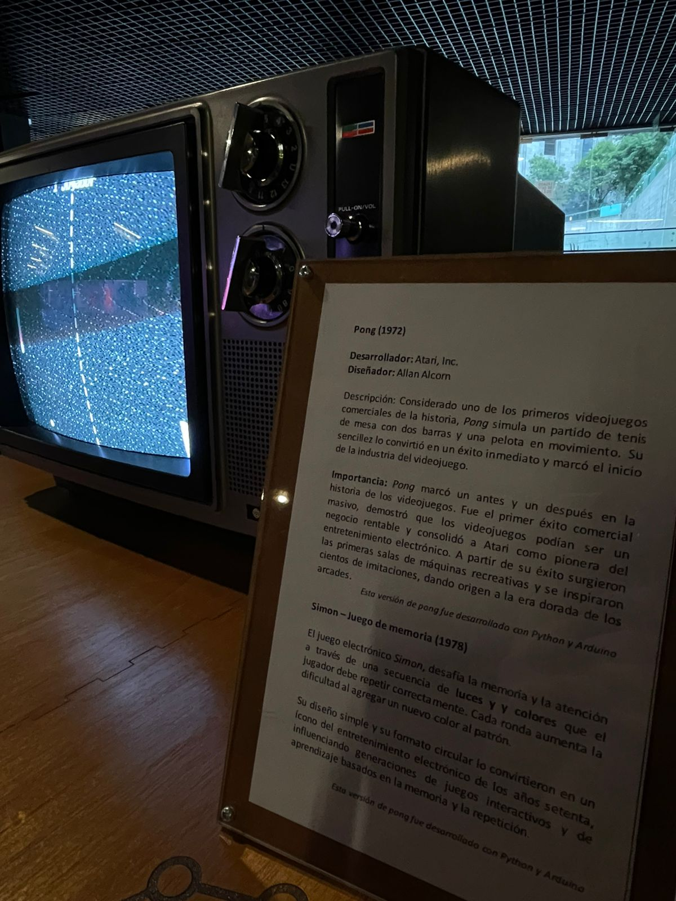
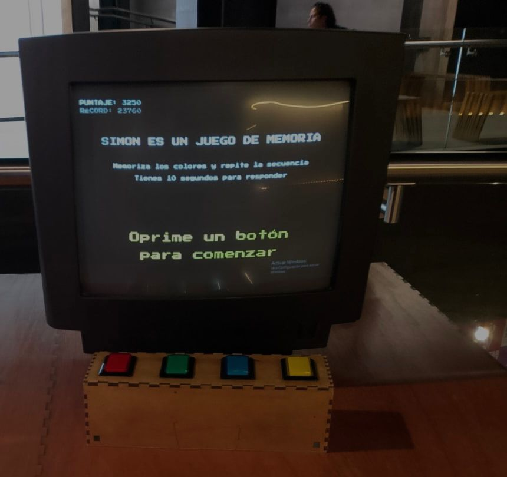
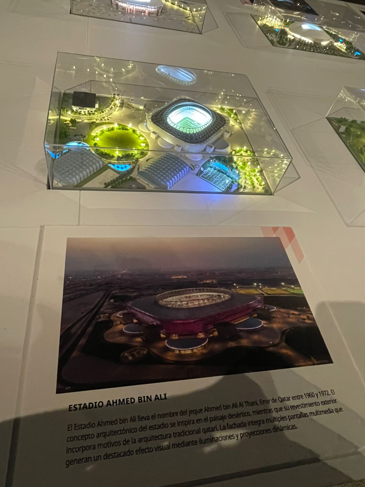
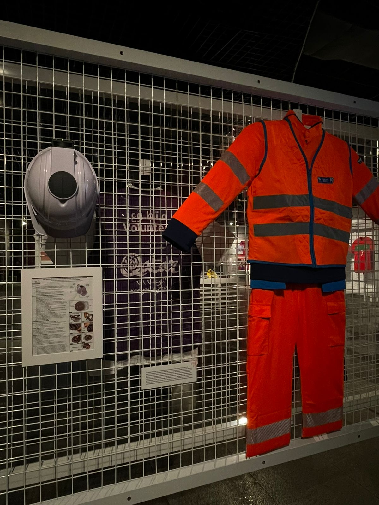
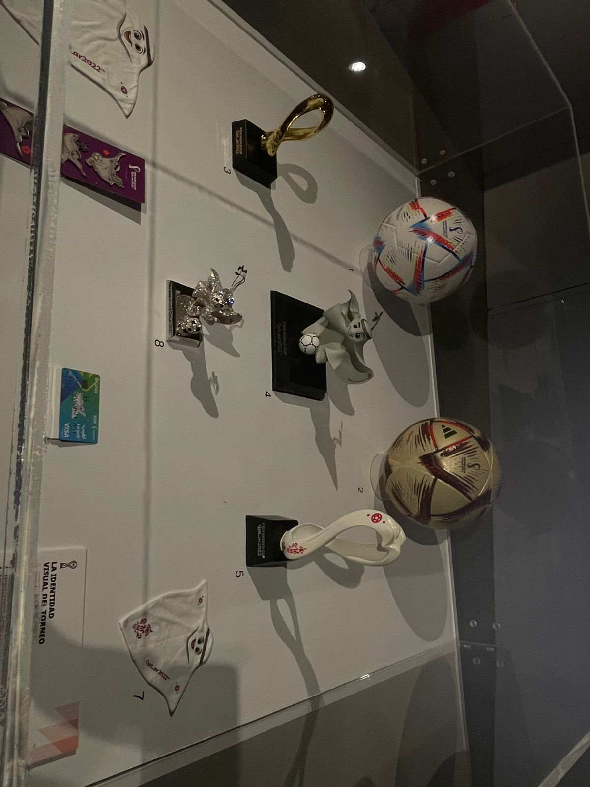
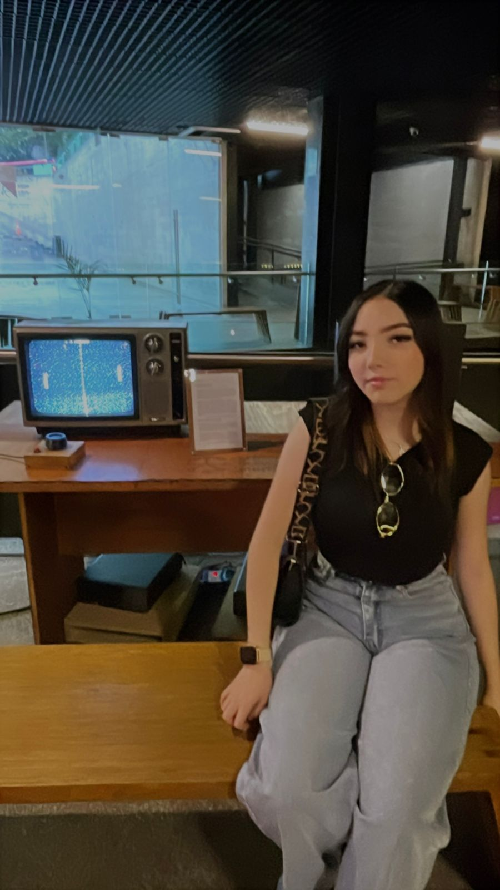

Visita al Museo Centro Cultural Digital CCD

Considerado uno de los primeros videojuegos comerciales de la historia,Pong simula un partido de tenis de mesa con dos barras y una pelota en movimiento.Su sencillez lo convirtió en un éxito inmediato y marcó el inicio de la industria del videojuego. Importancia:Pong marcó un antes y un después en la historia de los videojuegos.Fue el primer éxito comercial masivo,demostró que los videojuegos podían ser un negocio rentable y consolido a Atari como pionera del entretenimiento electrónico.A partir de su éxito,surgieron las primeras salas de máquinas recreativas y se inspiraron cientos de imitaciones,dando origen a la era dorada de los arcades .

Simón-Juego de memoria(1978) El juego electrónico Simón,desafía la memoria y la atención a través de una secuencia de luces y colores que el jugador debe repetir correctamente.Cada ronda aumenta la dificultad al agregar un nuevo color al patrón. Su diseño simple y su formato circular lo convirtieron en un icono del entretenimiento electrónico de los años setenta,influenciando generaciones de juegos interactivos y de aprendizaje basados en la memoria y la repetición.

ESTADIO AHMED BIN ALI El estadio AHMED BIN ALI lleva el nombre del jeque Ahmed bin ali Al Thani,emir de Qatar entre 1960 y 1972.El concepto arquitectónico del estadio se inspira en el paisaje desértico,mientras que su revestimiento exterior incorpora motivos de la arquitectura tradicional qatarí.La fachada integra múltiples pantallas multimedia que generan un destacado efecto visual mediante iluminaciones y proyecciones dinámicas.

La imagen muestra un equipo de seguridad industrial exhibido detrás de una rejilla metálica, compuesto por un casco y un uniforme de alta visibilidad color naranja con franjas reflejantes. Visualmente, el diseño transmite una sensación de protección, prevención y trabajo especializado, ya que estos elementos están asociados con ambientes de riesgo, como construcción, mantenimiento o rescate. El color naranja intenso domina la composición y cumple una función clave: atraer la atención de inmediato. En diseño visual, este color suele relacionarse con alerta, energía y precaución, lo que refuerza la idea de seguridad laboral. Las franjas grises reflejantes añaden contraste y funcionalidad, pues están diseñadas para aumentar la visibilidad en condiciones de poca luz. La rejilla metálica del fondo genera una textura geométrica repetitiva que aporta orden y estructura a la imagen. Además, crea un contraste entre líneas rígidas y la forma flexible de la ropa, haciendo que el uniforme destaque aún más. La iluminación tenue del entorno provoca que el uniforme resalte como el punto focal principal. En conjunto, la fotografía comunica la importancia del uso del equipo de protección personal (EPP) y refleja cómo el diseño visual puede combinar estética y funcionalidad para transmitir seguridad, disciplina y preparación ante situaciones de riesgo.

La fotografía muestra una vitrina de exhibición con trofeos, medallas y objetos conmemorativos relacionados con el fútbol, donde destaca al centro una réplica de la Copa del Mundo. El diseño visual dirige la atención inmediatamente hacia este elemento central gracias a su color dorado brillante, que contrasta con el fondo oscuro y simboliza prestigio, triunfo y excelencia deportiva. La composición está organizada de forma simétrica y ordenada, con los objetos distribuidos alrededor del trofeo principal. Esta disposición genera equilibrio visual y transmite una sensación de importancia jerárquica: la copa funciona como el punto focal, mientras que boletos, placas y medallas complementan la narrativa histórica del evento. La iluminación tenue del espacio cumple un papel fundamental, ya que resalta las superficies metálicas y crea reflejos que aportan profundidad y elegancia. El uso predominante de tonos oscuros en el fondo permite que los elementos dorados y plateados destaquen más, reforzando la sensación de exclusividad y valor
